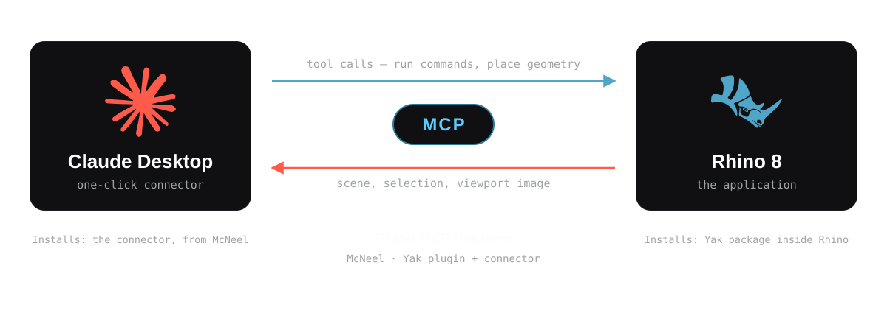

Connect Rhino to Claude
McNeel's own Rhino MCP Platform — a Yak plugin plus a one-click Claude Desktop connector. The only setup here with a first-party vendor behind it, and the easiest to install.

Of the five applications covered in these guides, Rhino is the one with first-party support. McNeel maintain the Rhino MCP Platform themselves, and it shows: the install is a package-manager command and a drag-and-drop, with no JSON to edit.
If you have not set up an MCP server before, read What MCP actually is first.
Source: McNeel's documentation at mcneel.github.io/RhinoAI. Check it before you install — versions move.
What you need
- Rhino 8. The plugin is Rhino 8 only. The documentation's own heading says so: "Install the Rhino plugin (Rhino 8 only!)". Rhino 9 WIP/BETA is supported as a target, but the plugin installs into 8.
- Claude Desktop, or Claude Code. Both routes are documented; Desktop is the easier one and McNeel recommend starting there.
Not supported, per McNeel's troubleshooting page: Intel Macs, and .NET Framework builds. Update Rhino to the latest release if the plugin does not appear in the package manager.
Step 1 — install the Rhino plugin
In Rhino 8, run:
PackageManagerSearch for Rhino-MCP-Platform and install it. Restart Rhino.
McNeel also publish a deep link that opens the package manager straight at it — rhino8://package/search?name=Rhino-MCP-Platform — which works only where the Rhino 8 protocol handler is registered. The PackageManager route always works.
Command-line alternative. Yak is Rhino's package manager and can be driven directly:
yak install Rhino-MCP-PlatformYak lives at:
| Platform | Path |
|---|---|
| Windows | C:\Program Files\Rhino 8\System\Yak.exe |
| macOS | /Applications/Rhino 8.app/Contents/Resources/bin/yak |
yak update and yak uninstall take the same package name.
Confirm the plugin loaded by running this in Rhino:
MCPStartStep 2a — Claude Desktop
The Desktop route uses a packaged extension, not a config file.
- Download
connector.mcpbfrom the RhinoAI releases page. At the time of writing the current file isconnector-v0.1.6/connector.mcpb— check the releases page for the latest rather than hard-coding that version. - In Claude Desktop, go to Settings → Extensions → Advanced settings.
- Click Install Extension and select the downloaded
.mcpb. - Click Install to confirm.
That is the whole setup. There is no claude_desktop_config.json to edit.
Step 2b — Claude Code
The Claude Code route does not use the .mcpb. Instead:
- In Rhino, run:
`` MCPConnect ``
- Copy the prompt it produces and paste it into a new Claude Code session.
- Restart Claude Code if it asks you to.
Note: McNeel's documentation describes this step but does not publish the text of the prompt — you get it from MCPConnect itself. If you are working from a guide (including this one) rather than from the command, you do not have it.
Checking it worked
Claude Desktop: Settings → Extensions should list the Rhino3d connector as connected.
Either client, the end-to-end test McNeel suggest:
Open a fresh Rhino doc and make me a box.
Rhino launches if it is not already running, a box appears, and Claude tells you what it did.
Targeting Rhino 9 WIP/BETA
The router defaults to Rhino 8.
- Claude Desktop: open the connector's settings and change 8 to 9.
- Claude Code or a custom config: add
"args": ["-v", "9"]to therhinoentry undermcpServersin~/.claude.json.
Grasshopper 2 tools (gh2_) require Rhino 9 WIP/BETA. If Grasshopper tools are not working, that is usually why — tell the agent to use Rhino WIP.
What it does
This is not read-only. McNeel present it as an assistant making geometry: Rhino and Grasshopper both, creating and modifying. Their documented examples include modelling from an image, building Grasshopper definitions, assigning layers, and upgrading GH1 definitions to GH2.
Which individual tools read and which write is not published, so assume any of them may change the document.
Working with it sensibly
Save first, and work in a file you are willing to lose. The same advice as every other integration in this series, and for the same reason: the tools that make it useful are the tools that can overwrite your afternoon.
Three failure modes from McNeel's own troubleshooting, worth knowing before they happen:
- "My agent doesn't see Rhino at all." Usually the connection was not made at startup. Quit and reopen the assistant, confirm the plugin installed via
PackageManager, and check Settings → Extensions. - "Rhino just crashed mid-conversation." The connector notices and tells Claude, which can offer to relaunch and retry. If the same prompt crashes Rhino every time, that is a bug worth filing.
- "It says it did something and I can't see it." Check you are looking at the right Rhino window — it may have edited another open one. Then View → Zoom → Zoom Extents, then the layers panel for hidden layers.
That last one is worth dwelling on. Claude can act on a different open document than the one you are looking at, which means "nothing happened" and "something happened somewhere else" look identical. Close the Rhino windows you are not using.
Where to get help
- GitHub issues: github.com/mcneel/RhinoAI/issues
- Rhino Discourse, AI category: discourse.mcneel.com